A
渲染与性能
- Lumen / TOD / 材质渲染协同
- 角色 GPU Pass 分析与画质档策略
- 体积雾 / 后处理 / 环境交互效果
- 材质实例与贴图复用梳理
2021 年北京电影学院研究生毕业（数字电影技术），加入腾讯光子工作室任技术美术至今。 前几年专注 PCG + 场景工具，从 0 建设开放世界的 PCG / 场景工具管线； 近两年任 TA 负责人，横向覆盖渲染与材质、美术规范、场景工具与团队管理。
研究 MCP 驱动 Unreal Editor 的工作流，尝试用自然语言协助资产导入、场景搭建与运行验证，并把失败经验沉淀为工具稳定性改进。
作为 TA 负责人负责美术技术规划与跨团队推进，覆盖实时渲染、材质、场景交互、资产规范与性能验收；并持续探索 MCP 辅助工作流，管理 3 名正编 + 7 名实习生。
围绕地形、道路、植被、建筑与场景性能优化等模块建设 PCG 与场景工具流程；基于 PCG Graph、Geometry Script 与 Utility Widget 形成可复用工具集。
围绕程序化场景和 Houdini PCG 管线进行前期研究，建立从工具实验到引擎落地的方法基础。
围绕角色、自然环境和材质系统，做方案验证、性能分析与生产规范沉淀。
围绕 High / Mid / Low 质量档对角色 GPU Pass 进行拆解，聚焦头发、半透明、阴影与材质等主要成本，为画质降级、角色预算与验收提供依据。
梳理不同质量档下皮肤、眼部、睫毛与服装的材质、贴图复用关系；将 LOD、贴图规格、材质槽与资产成本纳入统一的生产与验收约束。
设计 SpeedTree → Houdini → UE5 的植被资产链路，并结合实例化、风动距离分层、阴影与距离场参与策略，在动态表现与环境成本之间做取舍。
精选 0 项代表作，点击卡片查看大图 / 视频演示。
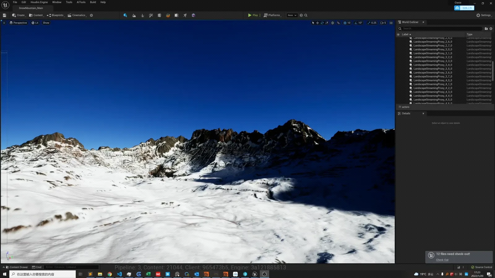
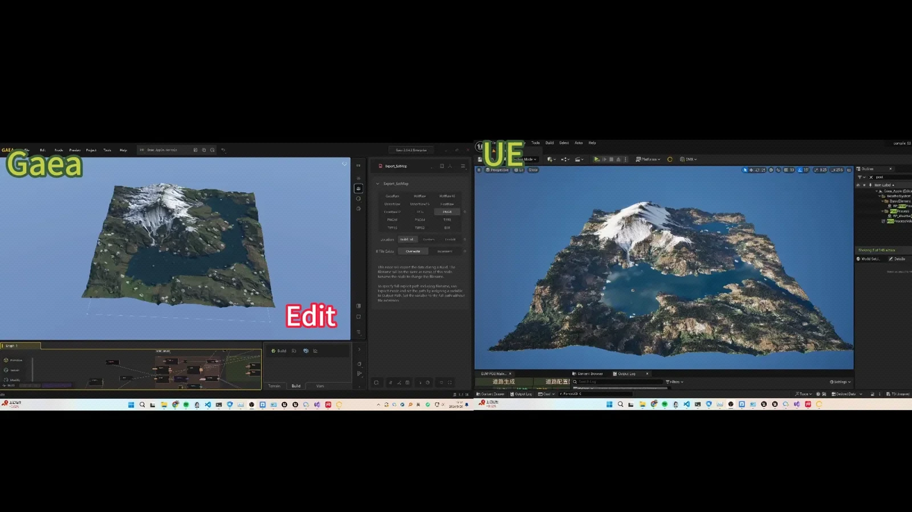
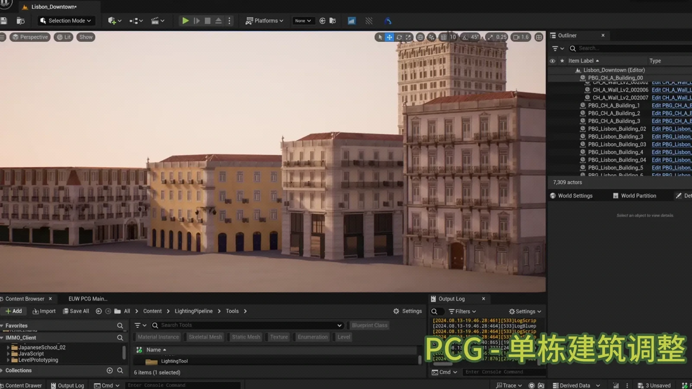

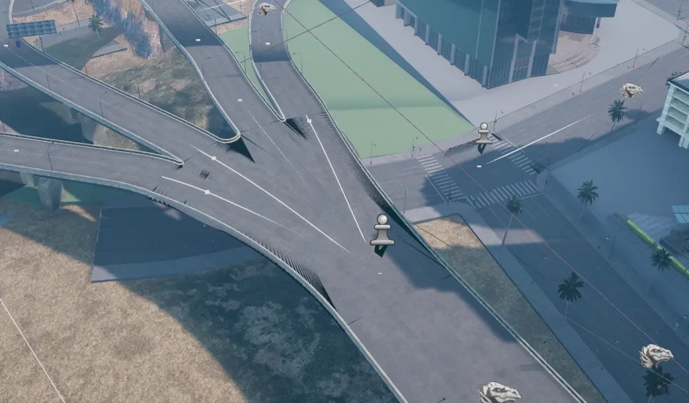
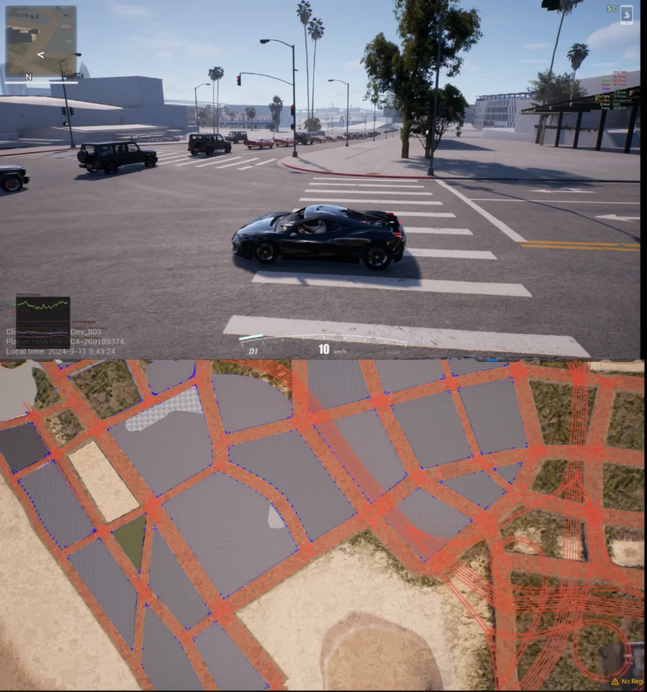
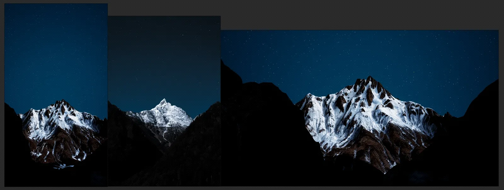
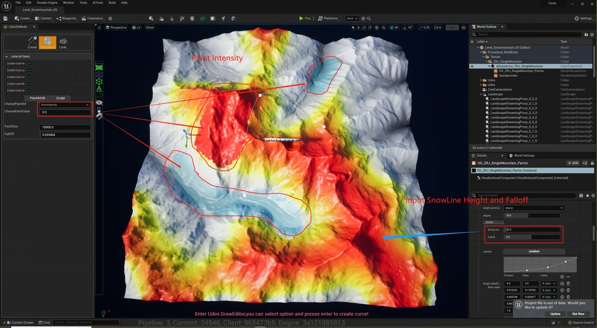
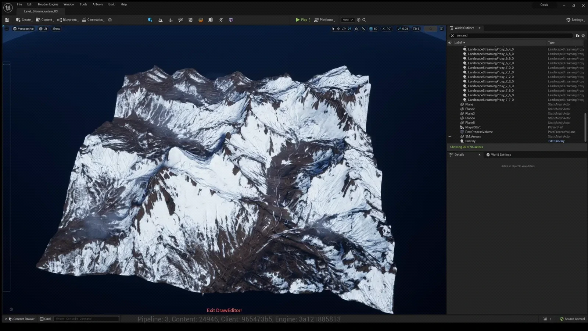
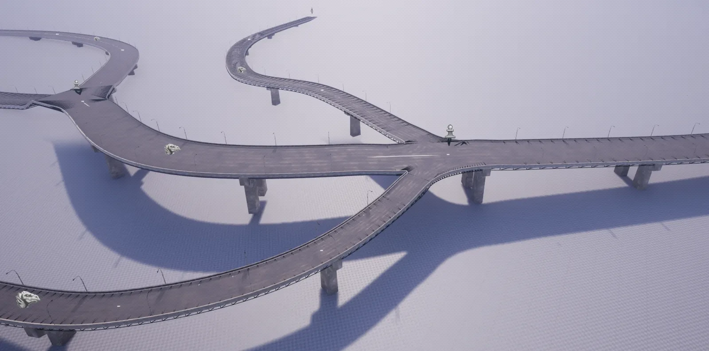
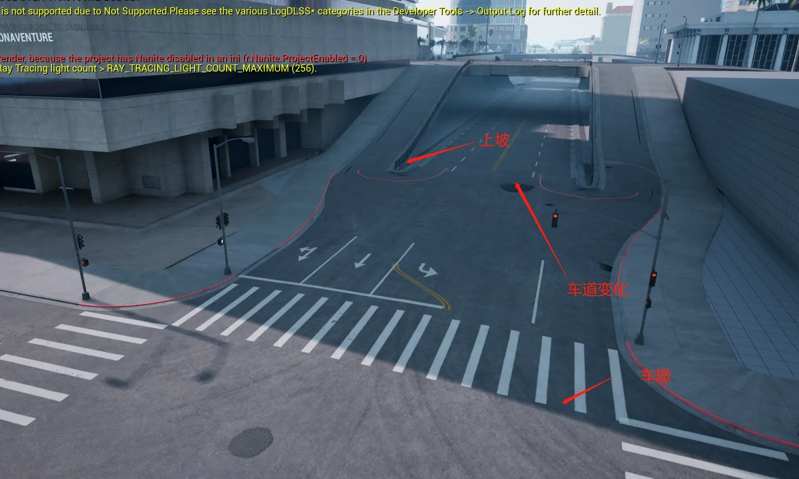
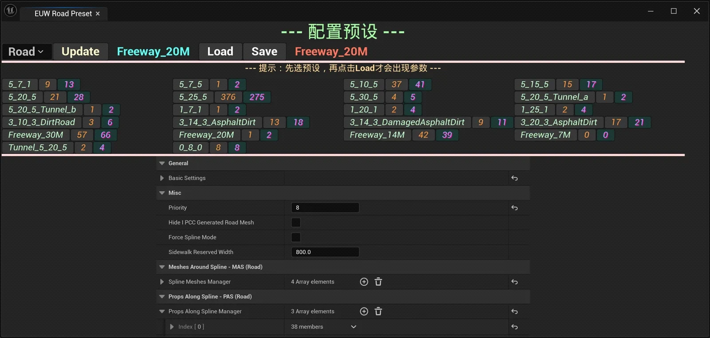
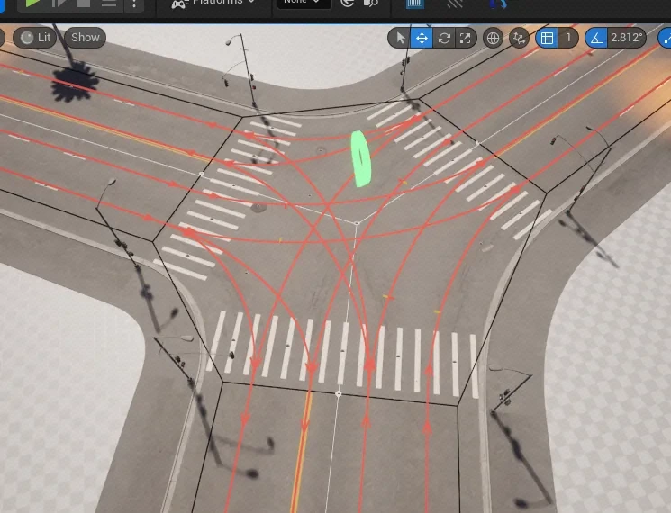
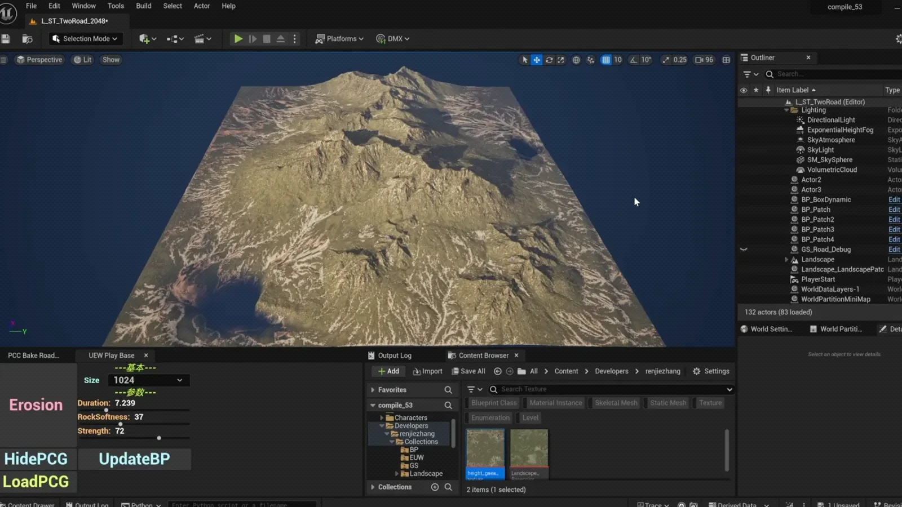
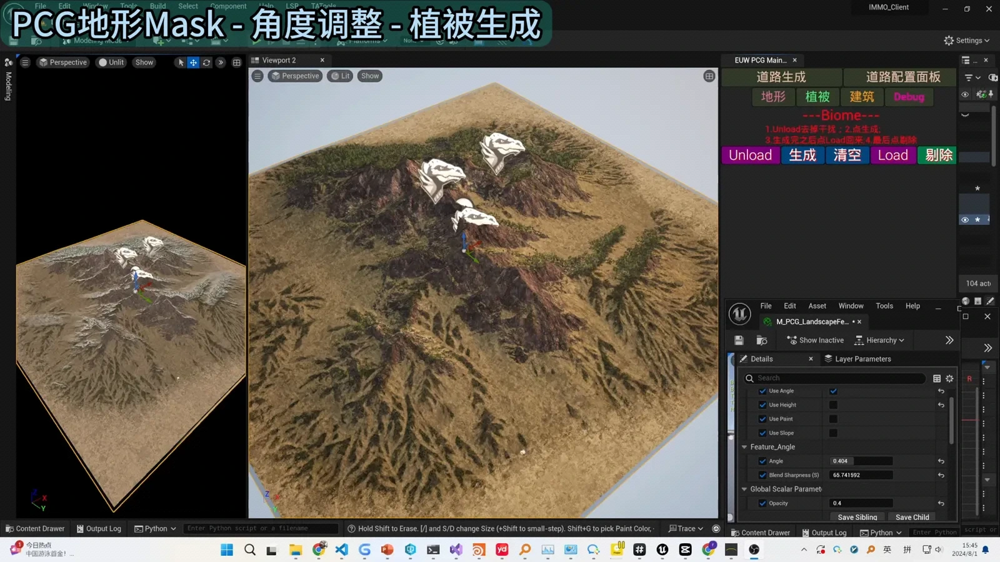
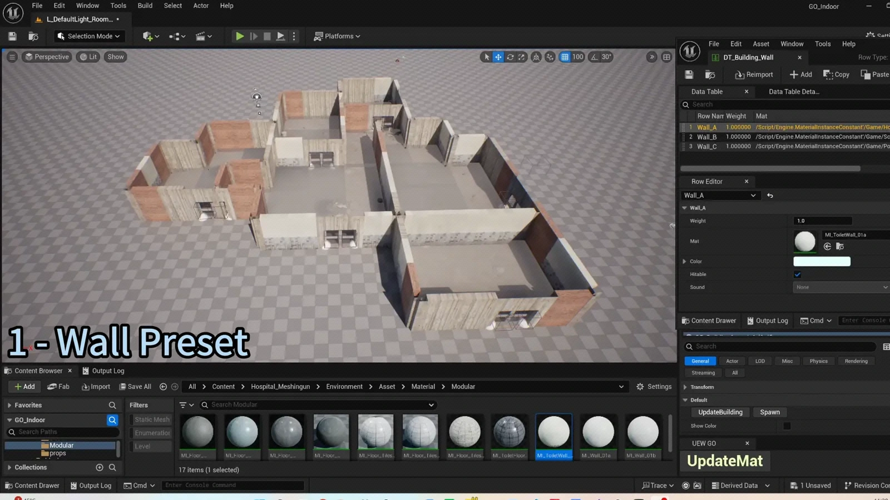
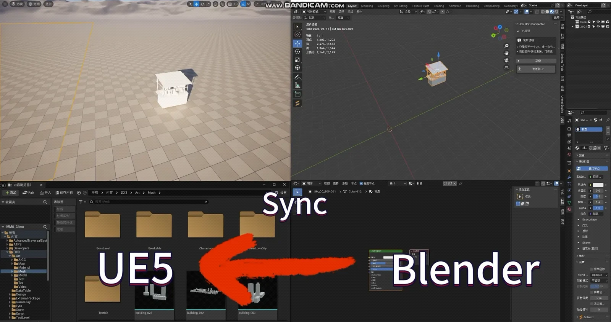
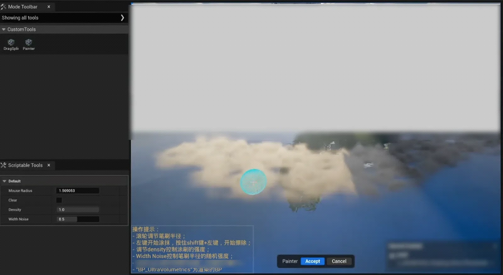
开放世界 / PCG / 场景工具 / TA 团队建设，都欢迎聊聊。
北京 · 腾讯光子工作室群 · 张仁杰